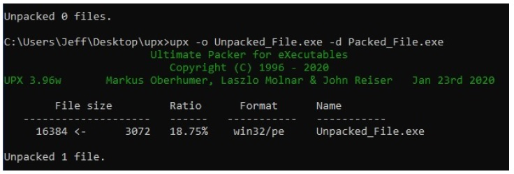
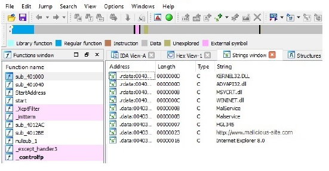
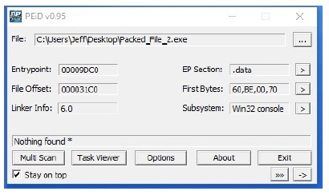
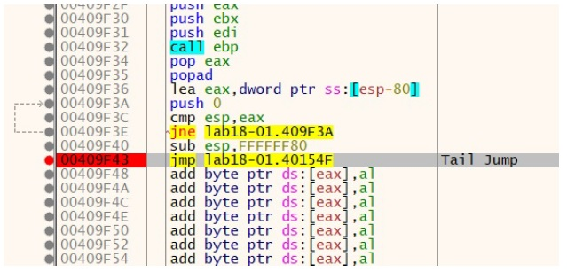
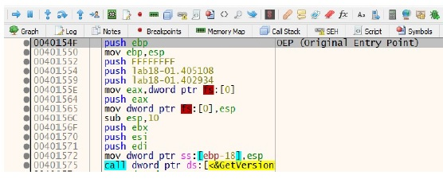
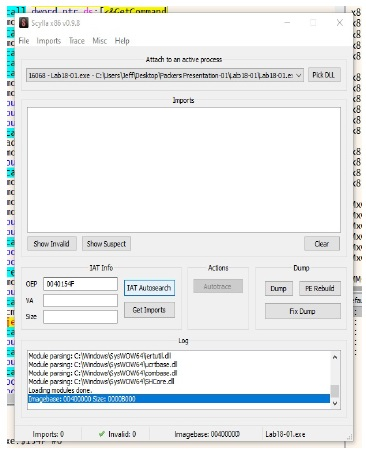
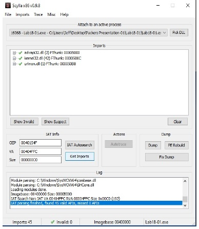
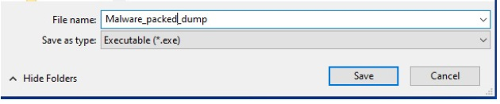

UPX shorthand for the Ultimate Packer for executables.
• UPX is a free, portable, extendable, high-performance executable packer for several executable formats.
• It typically compresses better than WinZip/zip/gzip.
• Its written in C++ and because of its of its class layout it's very easy to add new executable formats or new compression algorithms.
• A typical malware file packed with UPX will look something like this in PEiD.
UPX uses the command line to unpack the file with the command: upx –o Unpacked_File.exe Packed_File.exe
Looking at the unpacked file in IDA Pro we can see more functions, plus more strings are available. We can see from the strings this file is indeed malware.
 Unpacking A Modified UPX PackerThe next packed file when placed in PEid does not detect the packer.

This file is packed with a slightly modified version of UPX. A section in the file named UPX 2 made me suspect this was a UPX-like packer. A modified UPX packer makes it more resistant to signature detection.
Loading this file into a debugger and searching for the tail jump. The tail jump is a jump instruction to the original entry point to the malware.

We set a breakpoint at this location 40154F. This is the original entry point of the program. We run the program and step into this location.
Here we hit the original entry point.
 Scylla Plug-inWe use the Scylla Plug-in in x64dbg to extract the binary.

I have to click Autosearch to scan for Imports. When that is complete I click on Get Imports to get a list of all the imports found.

I click on Dump to dump the extracted binary. I rename it to Malware_packed_dump.

I save the binary and open it in IDA pro where now I have access to the full unpacked executable.
For more information about packed files and unpacking malware check out my UPX Packers and Unpacking Report which is available here.
| Read More | UPX PACKERS AND UNPACKINGIn this report we will look at Packers, which are tools used to hide malicious files by encrypting and compressing the file to make the code unrecognizable allowing it to bypass antivirus software. I willexplain how packers work and look at the different types of packers. There are ways to unpack malware, we will look at how this process is accomplished and the tools used to achieve it. |